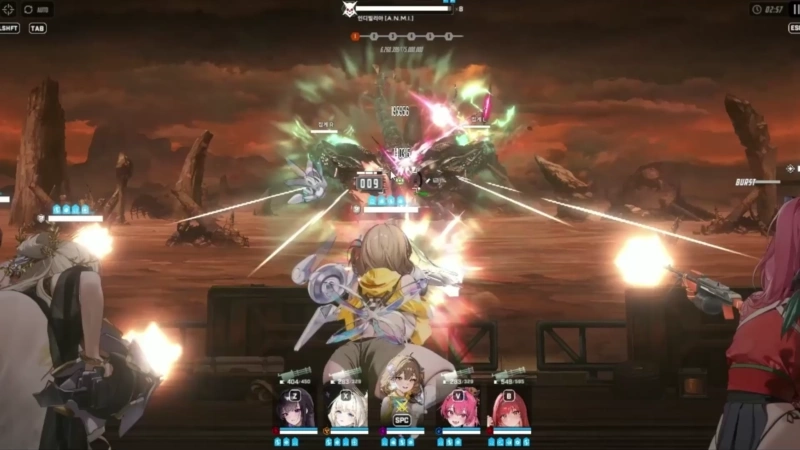
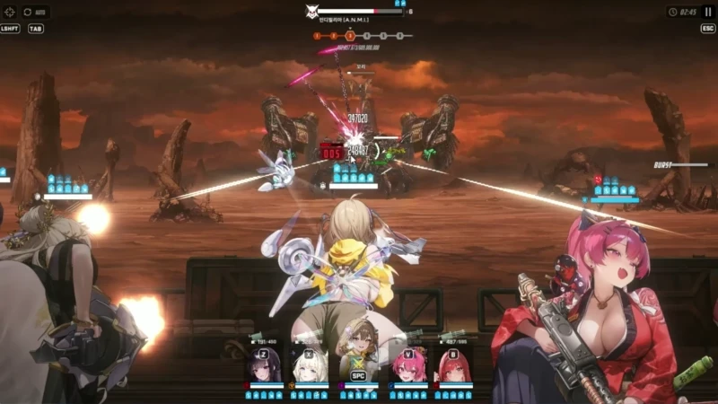
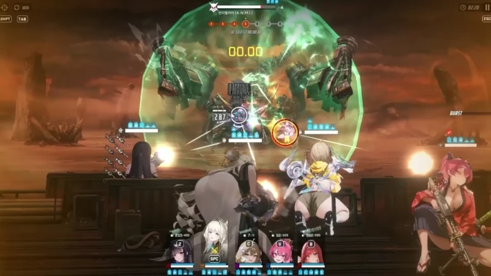
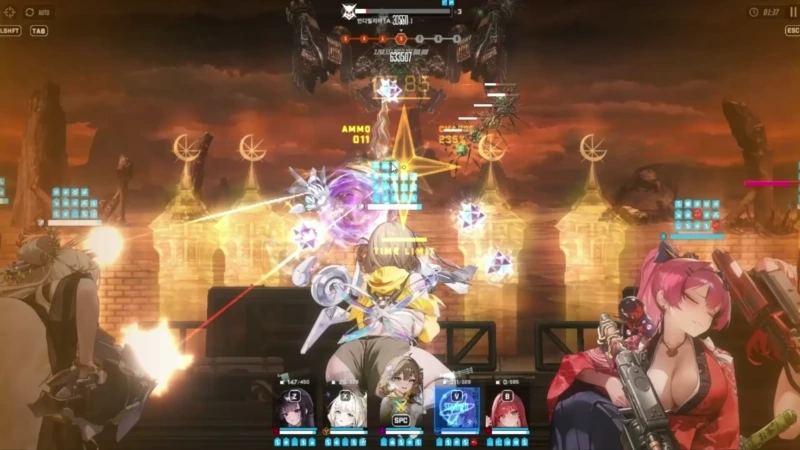
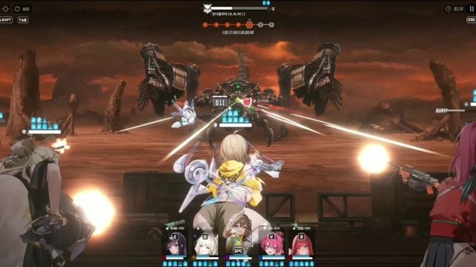
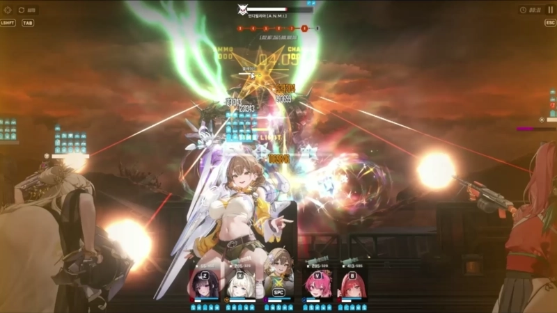

싱크 - 391 인디9단클 기념으로 조금이라도 도움이 될까 해서 적어보는 공략글
이미 잘 쓴 공략글들이 많지만 그래도 조금이라도 도움이 될까 싶어서 적어보겠삼
조합 - 미하라/크라운/아니스/메스트/라피
*헬름 안쓰는이유 딜 부족한 것 같아서
노힐덱 주의할 점 - 2페 넘어가기 전 라피 엄폐물이랑 체력을 최대한 아껴야함
참고할 점 - 크라운 노 장탄
1. 아 - 메 - 미
처음 꼬리는 아니스가 자동으로 잡아줘서 맨처음에는 안쳐도 됨

2. 아 - 크 - 라
점프 후 따발총 6발 쏘는데
내 기준
미하라(실드) - 라피(실드) - 크라운(도발+무적) - 크라운(도발+무적) - 크라운(도발+엄폐) - 라피(엄폐)
맨 처음에 라피 맞으면 두번째 때 엄폐하면 될 듯

3. 아 - 메 - 미
레이저 타겟팅 엄폐(맨 처음 레이저 타겟팅 니케 실드 남아있으면 엄폐 안해도 상관X)
4. 아 - 크 - 라
속저 최대한 늦게 + 크라운 도발 스택관리
이유 - 속저 최대한 늦게하는 이유는 최대치로 땡겨야 마지막 따발총 패턴을 안볼 수 있고 크라운 도발은 다음 따발총 3발을 크라운한테 빼기 위해

5. 아 - 크 - 미
크라운 쓰는 이유는 다음 파츠 재생성 때
메스트 + 라피 버스트 사용하기 위함
6. 아 - 메 - 라
주의할 점이 세이렌이 아니다보니 점프뛰면 애들이 사격을 취소함
그래서 꼭 버스트 키고 점프를 시켜서 계속 사격상태유지
꼬리는 팔 다 부수고 1초정도 점사하면 부서졌던 것 같음
7. 아 - 크 - 미
여기도 똑같이 점프뛰기전에 버스트키고
점프 후 따발총 6발
라피(실드) - 크라운(도발+무적) - 크라운(도발+무적) - 크라운(도발+엄폐) - 미하라(엄폐+버스트꺼져서미하라사격) - 라피(엄폐)
나는 버스트 끝나면 미하라가 타겟팅이라 미하라 엄폐했는데 라피면 걍 라피엄폐 고고혓

8. 아 - 메 - 라 or 아 - 크 - 라
나는 여기서 실수로 메스트 눌러서 걍 했는데 크라운하고 다음이 메스트가 더 좋을듯
메스트면 레이저엄폐 + 크라운 스택 미리 확인해서 도발 안터지게하기
9. 아- 크 - 미 or 아 - 메 - 미
속저 최대한 늦게하기 + 크라운 도발 스택 관리하기
보통 여기서 버스트 끝나자마자 or 다음 버스트 시작하자마자 넘어갈꺼임
그래서 크라운 무적 관리해두기

10. 아 - 크 -라
2페 들어와서 크라운 무적 터트려주기
11. 아 - 메 - 미
12. 아 - 크 - 라
족자 끝나고 12초뒤쯤 따발총 5발쏨
그래서 그 전에 크라운 스택 미리 확인 + 라피 엄폐준비

13. 아 - 크 - 미
레이저 쏘는데 나는 쫄려서 엄폐 했음
대충 2페 00분54초쯤에 넘어오면 클리어가 가능할 것 같긴함
이미 잘 쓴 공략글 들도 많고
내가 글도 못 쓰는 편이라 도움이 별로 안될 것 같긴 한데
그래도 조금이라도 도움이 되고 싶어서 글 올려봤음
궁금한거 있으면 아는건 니갤 하는동안 최대한 답해주겠삼
3줄요약
1.라피 엄폐물 + 체력관리 최우선
2.크라운 도발관리 중요
3.아니스는 신이다
4.베히 실장좀